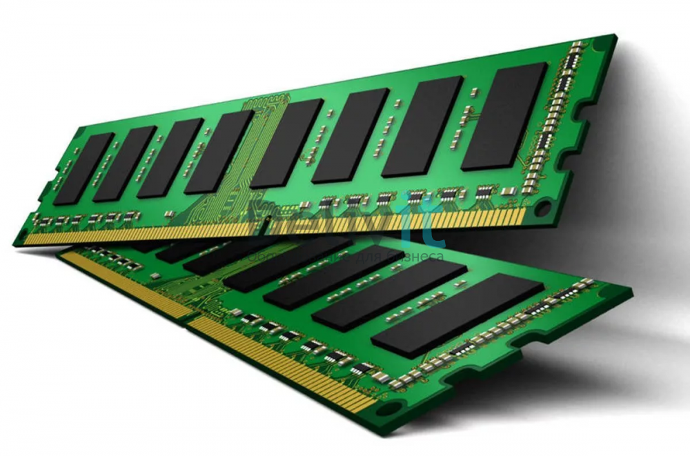

Эта статья для тех, кто хочет разобраться, из чего же состоит компьютер и за что отвечает каждая его составляющая.
Это мозг компьютера. Он является главным компонентом и производит все вычисления в компьютере, контролирует все операции и процессы. Бывают процессоры фирмы Intel и AMD. Основной характеристикой является частота процессора (измеряется в Герцах), а также – разъём для подключения к материнской плате.

Эта самая большая плата в компьютере, которая является связующим звеном между всеми остальными компонентами. К материнской плате подключаются все остальные устройства, включая периферийные. Основными характеристиками являются: тип поддерживаемого процессора (сокет), тип поддерживаемой оперативной памяти (DDR2, DDR3, DDR4), форм фактор (определяет в какой корпус вы сможете поместить данную плату), а также – типы разъёмов для подключения остальных компонентов компьютера.

Это временная память, в которую подгружаются все запускаемые программы на компьютере, процессы и всё остальное. При выключении и повторном включении компьютера оперативка (так более-менее продвинутые пользователи часто называют оперативную память) будет очищена и по мере запуска вами различных программа начнёт снова заполняться. Т.е. это энергозависимая память.
Это память, на которой у вас постоянно хранятся все ваши файлы. Бывают диски HDD и SSD. Основная характеристика у HDD и SSD – объём для хранения данных. Также не менее важной характеристикой для SDD является скорость записи / считывания.
Это устройство отвечает за формирование и вывод изображения на экран монитора или любого другого аналогичного подключенного устройства. Разница в том, что встроенная видеокарта не предназначена для запуска ресурсоёмких игр, работы в профессиональных редакторах изображения и видео. Основной характеристикой видеокарты является: разъём для подключения к плате, частота графического процессора, объём и тип видеопамяти, разрядность шины видеопамяти.

В каждом компьютере имеется, как минимум, встроенная звуковая карта и отвечает, соответственно, за обработку и вывод звука. Дискретная звуковая карта будет выдавать звук намного качественнее.

Служит для подключения компьютера к внутренней сети и к интернету. Основной характеристикой является пропускная способность, измеряемая в Мбит / сек.
Он подключается к электросети и служит для снабжения постоянным током всех других компонентов компьютера, преобразуя сетевое напряжения до требуемых значений. Основной характеристикой блока питания является его мощность и измеряется, соответственно, в Ваттах. В компьютер ставится блок питания с такой мощностью, чтобы её хватило для питания всех компонентов компьютера. Также блок питания должен иметь все необходимые разъёмы для подключения ко всем имеющимся компонентам компьютера: материнской плате, процессору, HDD и SSD дискам, видеоадаптеру, дисководу.

Служит для чтения CD/DVD/Blu-Ray дисков. Если планируется на компьютере читать или записывать какие-либо диски, то, конечно же, такое устройство необходимо. Из характеристик можно отметить только способность дисковода читать и записывать различные типы дисков, а также разъём для подключения к плате, который на сегодняшний день практически всегда – SATA.
Все компоненты компьютера помещаются в специальный корпус (системный блок) для того чтобы исключить на них внешнее воздействие, защитить от повреждений и поддерживать внутри корпуса нужную температуру за счёт имеющихся в нём вентиляторов. Основной характеристикой корпуса является формфактор поддерживаемых материнских плат.
Также, уже вне корпуса, будет расположено ещё одно важное устройство – монитор. Монтитор подключается проводом к материнской плате и без него вы, соответственно, не увидите всего что делаете на компьютере.
Основными параметрами монитора являются:
Надеюсь, что данная статья была вам полезна и вы узнали что-то новое для себя!